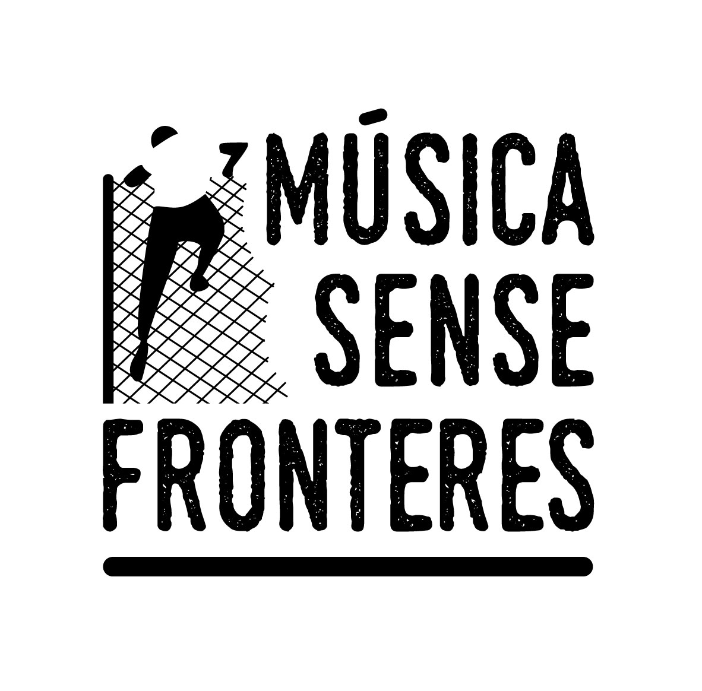

El Música Sense Fronteres neix a través d’una iniciativa individual de Pau Martí Aguilera de realitzar un acte per ajudar a les persones refugiades des de Sant Boi, a través de la música. El projecte es va iniciar al 2016 després de presentar la proposta a l’àrea de Cooperació, Solidaritat i Pau de l’Ajuntament de Sant Boi, que va acceptar col·laborar-hi activament, juntament amb la participació voluntària de diverses persones i col·lectius.
Des de l’organització, treballem amb totes les nostres ganes per fer possible el projecte any rere any, intentant en tot moment adaptar-nos al context en que ens trobem, però sense deixar mai de lluitar per un projecte en el que confiem i creiem des de l’inici, apostant per un model de cultura en el que ens veiem reflectits i amb el que ens agradaria trobar-nos en tots els espais en que ens movem.
Un dels principals objectius del festival és la recaptació de fons per a les entitats que treballen amb les persones refugiades per tal que puguin seguir desenvolupant la seva tasca, sense els quals seria impossible. Si bé aquestes entitats es caracteritzen principalment per la defensa dels drets de les persones amb l’objectiu de defensar la seva dignitat, així com tota la feina de sensibilització i visibilització de la realitat que viuen milions de persones al món, darrere de tots els projectes necessiten suport econòmic per tirar-los endavant, que en moltes ocasions la falta de recursos impedeix. Per aquest motiu, considerem realment important recolzar-les amb l’aportació de les persones que defensen aquesta causa, actuant com a plataforma per a la seva recaptació, i així garantir la continuïtat de projectes socials i humanitaris.
Qualsevol projecte social neix amb l’objectiu de transformar la realitat de les persones que hi participen. En el nostre cas un dels reptes a través del festival és la difusió de la tasca que realitzen les organitzacions que recolzem per debatre sobre la situació en que es troben les persones refugiades, aconseguint que el públic assistent més enllà de la participació en un esdeveniment lúdic, s’impliqui amb el projecte des de la conscienciació i reflexió per trobar les eines que afavoreixen l’activisme per continuar amb la sensibilització en altres espais, arribant a la possibilitat de sumar-se a altres projectes vinculats amb les persones refugiades des d’altres àmbits d’actuació, tant locals com extraterritorials. Tot plegat, des de la defensa dels valors que es desprenen dels Drets Humans, i alhora afavorint la creació d’espais igualitaris que de manera transversal, i amb ajuda d’altres col·lectius del territori, impregnin el festival implicant-se també amb altres causes socials, des dels feminismes a l’ecologisme.
Defensem la música com a eina de difusió cultural i de transformació social per aconseguir elaborar propostes, que més enllà de la música, defensin els valors associats al festival, contribuint a la creació d’espais de reflexió social des dels espais lúdics i culturals de la ciutat. Entenent els esdeveniments musicals com un dels principals elements de cohesió dins les societats actuals, i afavorint la participació de la ciutadania, el festival s’articula amb l’objectiu d’aprofitar el caràcter transversal, multicultural i universal de la música per incidir en la realitat.
Un altre dels objectius del festival és crear un projecte comunitari que impliqui tot el teixit associatiu i participatiu del territori, fomentant la col·laboració d’altres entitats de la ciutat per construir de manera conjunta l’espai del Música Sense Fronteres. D’aquesta manera, volem comptar amb projectes artístics que s’identifiquin amb la lluita social des dels seus projectes musicals, ja sigui a través de les seves lletres o amb la participació directa, així com aquelles entitats i col·lectius del territori que amb la seva tasca s’adhereixin al nostre projecte en la seva organització i planificació. En resum, la voluntat d’un projecte col·lectiu dirigit per les persones i per a les persones.
Des del festival, creiem imprescindible comptar amb la veu de les persones de la ciutat per construir plegades aquest projecte. Per això, considerem el festival com una gran oportunitat per crear espais de cooperació entre totes les persones i entitats que s’identifiquen amb la defensa dels drets de les persones refugiades. D’aquesta manera, organitzar un esdeveniment que afavoreixi l’empoderament i la reflexió al voltant de les realitats que ens envolten i elaborar estratègies de canvi, des del debat i l’horitzontalitat que retorni al poble la capacitat de decidir.Esdevenir un espai de participació per a les persones refugiades que es troben al territori.Sant Boi, com a ciutat refugi, compta amb un col·lectiu de persones que han viscut, i viuen encara avui en una situació complexa com a conseqüència de les polítiques migratòries del nostre territori. Tenint en compte la vulneració de drets constants, volem que el festival esdevingui un espai de participació per a que les persones refugiades que viuen a la ciutat tinguin un espai de participació on elles siguin qui decideixin com tirar endavant el projecte, en tant que no te sentit plantejar un projecte per a les persones refugiades sense escoltar la seva veu.
Si vols saber més sobre el projecte, fes click aqui !
La organización advierte que la compra de abonos fuera de los canales oficiales supone un riesgo para el asistente, pudiendo estar adquiriendo entradas duplicadas o falsas con las que se denegaría el acceso al festival. La organización realizará validación electrónica del 100% de las entradas, negando el acceso a toda aquella entrada que ya haya sido previamente validada o adquirida fuera de los canales oficiales del Festival (Viña Rock, SeeTickets).
Los menores de 9 años podrán acceder al festival de forma gratuita acompañados por su padre, madre o tutor legal y presentar en el festival la autorización de menoresfirmada junto a su DNI. Los menores que tengan menos de 16 años deberán entrar al recinto con su padre, madre o tutor legal y presentar en el festival la autorización de menores firmada junto a su DNI. Los menores que tengan 16 o 17 años deben presentar en el festival la autorización de menores firmada por el padre, madre o tutor legal junto a su DNI. Debes rellenar el formulario de autorización de menores, para ello has de descargar el documento, imprimirlo y que tu padre, madre o tutor legal lo firme para que puedas presentarlo en el festival cuando llegues.
Todas las entradas incluyen el acceso a la zona de descanso de Viña Rock situada en el Parque de la Avenida del Oeste. La zona de descanso está equipada con duchas de agua caliente (a un precio módico por ducha o comprando un bono de duchas ilimitadas), WC’s químicos, punto de información y objetos perdidos, recarga de móviles, consignas, barras y zona de restauración. En la zona de descanso está permitido acceder con comida y bebida. Mantén siempre tus pertenencias controladas, la organización no se hace responsable en caso de hurto o robo en la zona de descanso.
Viña Grow es la Feria Cannábica de Viña Rock. Viña Grow vuelve con la VII edición para acercar el mundo cannábico a los viñarockeros. Si añado mas texto se ajusta automaticamente a la medida coherente. Y si añado mas texto, como 'Todas las entradas incluyen el acceso a la zona de descanso de Viña Rock situada en el Parque de la Avenida del Oeste. La zona de descanso está equipada con duchas de agua caliente (a un precio módico por ducha o comprando un bono de duchas ilimitadas), WC’s químicos, punto de información y objetos perdidos, recarga de móviles, consignas, barras y zona de restauración.'
Todas las entradas incluyen el acceso a la zona de descanso de Viña Rock situada en el Parque de la Avenida del Oeste. La zona de descanso está equipada con duchas de agua caliente (a un precio módico por ducha o comprando un bono de duchas ilimitadas), WC’s químicos, punto de información y objetos perdidos, recarga de móviles, consignas, barras y zona de restauración. En la zona de descanso está permitido acceder con comida y bebida. Mantén siempre tus pertenencias controladas, la organización no se hace responsable en caso de hurto o robo en la zona de descanso.
Viña Grow es la Feria Cannábica de Viña Rock. Viña Grow vuelve con la VII edición para acercar el mundo cannábico a los viñarockeros. Si añado mas texto se ajusta automaticamente a la medida coherente. Y si añado mas texto, como 'Todas las entradas incluyen el acceso a la zona de descanso de Viña Rock situada en el Parque de la Avenida del Oeste. La zona de descanso está equipada con duchas de agua caliente (a un precio módico por ducha o comprando un bono de duchas ilimitadas), WC’s químicos, punto de información y objetos perdidos, recarga de móviles, consignas, barras y zona de restauración.'
Todas las entradas incluyen el acceso a la zona de descanso de Viña Rock situada en el Parque de la Avenida del Oeste. La zona de descanso está equipada con duchas de agua caliente (a un precio módico por ducha o comprando un bono de duchas ilimitadas), WC’s químicos, punto de información y objetos perdidos, recarga de móviles, consignas, barras y zona de restauración. En la zona de descanso está permitido acceder con comida y bebida. Mantén siempre tus pertenencias controladas, la organización no se hace responsable en caso de hurto o robo en la zona de descanso.
Viña Grow es la Feria Cannábica de Viña Rock. Viña Grow vuelve con la VII edición para acercar el mundo cannábico a los viñarockeros. Si añado mas texto se ajusta automaticamente a la medida coherente. Y si añado mas texto, como 'Todas las entradas incluyen el acceso a la zona de descanso de Viña Rock situada en el Parque de la Avenida del Oeste. La zona de descanso está equipada con duchas de agua caliente (a un precio módico por ducha o comprando un bono de duchas ilimitadas), WC’s químicos, punto de información y objetos perdidos, recarga de móviles, consignas, barras y zona de restauración.'
Posar text del compromis de la parra que es estar al costat dels voluntaris, substituit per un parraf de la descripció del projecte:
Des de l’organització, treballem amb totes les nostres ganes per fer possible el projecte any rere any, intentant en tot moment adaptar-nos al context en que ens trobem, però sense deixar mai de lluitar per un projecte en el que confiem i creiem des de l’inici, apostant per un model de cultura en el que ens veiem reflectits i amb el que ens agradaria trobar-nos en tots els espais en que ens movem.
Fes click aqui per registrarte com a voluntari!Vols dir-nos alguna cosa ?